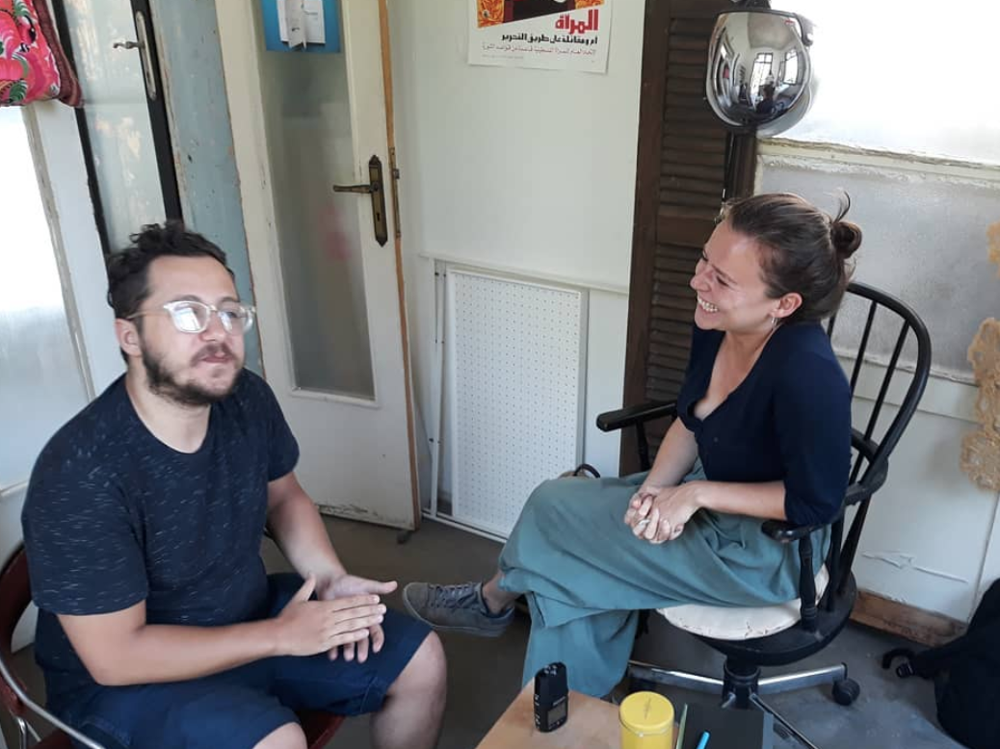
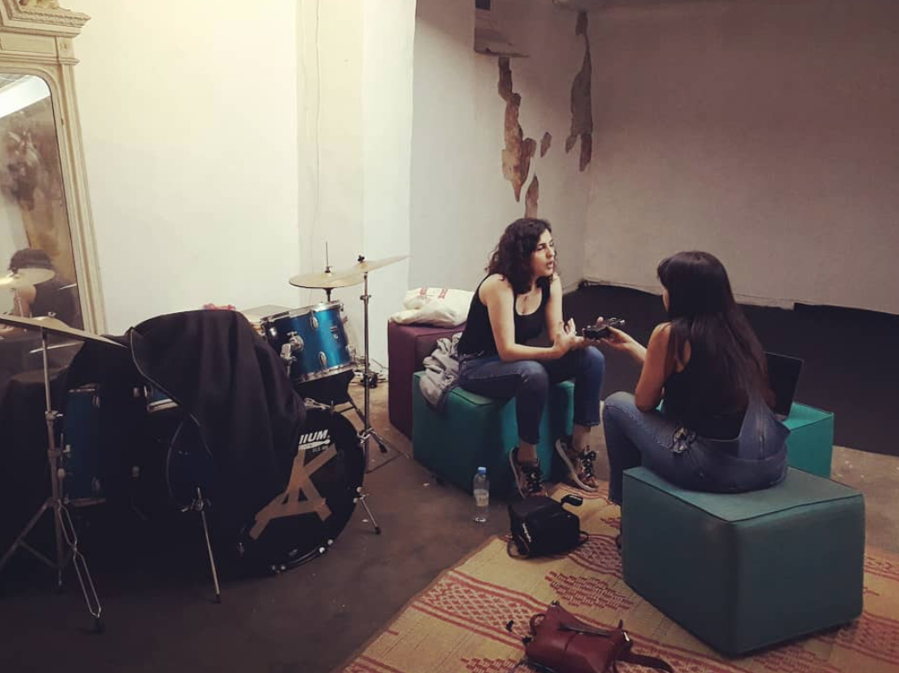
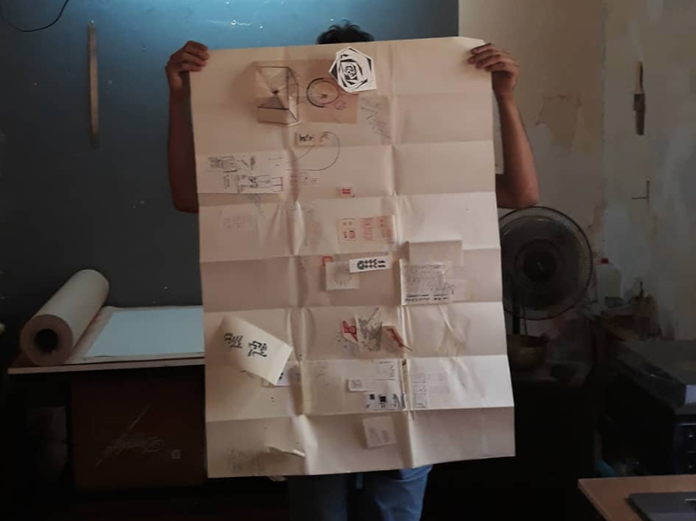

Kinda Hassan Title Goes HereWe invited members of the Mansion community to join a WhatsApp group and asked them to record and share different sounds. We then sent this sound pool to 4 local sound artists and asked them to compose radio pieces from the sounds in the pool. This is what Paris-based Lebanese artist Kinda Hassan came up with.
06.00 On my way to Mansion - Ziad NawfalOne of six sound pieces produced during 'My Journey to the Mansion' workshop. Ziad Nawfal is a Lebanese sound artisit currently based in Mexico City.
07.00 Good Morning with Kinana - Kinana Sarkis Morning musings in which the Mansion resident takes us through the ways in which she translates sounds into poetry.
08.00 A Spirituality Program - Ghada Sakris and Nour MaherGhada Saffa and Nour Hamdan joined the Mansion Residency in 2015 and since then they've been leading Yoga classes in the spaces.
09.00 Sound Art - Rachel DedmanCurator and Mansion resident Rachel Dedman speaks to 3 local artists (Hussein, Mirna, and Nadim) about their recent sound work.
10.00 Back and Forth - Lara ZayedOne of six sound pieces produced during 'My Journey to the Mansion' workshop. Lara Zayed is a Lebanese sound artisit currently based in Mexico City.
11.00 Trauma - Samar KanafaniPodcast by anthropologist and Mansion resident Samar Kanafani on trauma and the many ways in which it's manifested in the Lebanese society and public.
12.00 What's the sound equivalent of an infographic? - Amal NassarA program with Mansion resident and infographist behind Visualizing Palestine Ahmad Barclay and the workshop he's leading in Beirut.
13.00 Work - Samar Atallah One of six sound pieces produced during 'My Journey to the Mansion' workshop. Lara Zayed is a Lebanese sound artisit currently based in Mexico City.
14.00 Program on Oral History - Farah Fayyad Designer and Mansion resident Rachel Dedman speaks to 3 local artists (Hussein, Mirna, and Nadim) about their recent poetry work.
15.00 Suicide Hotline - Mary NassarPodcast by anthropologist and Mansion resident Samar Kanafani on trauma and the many ways in which it's manifested in the Lebanese society and public.
16.00 Audio Testimonies - Joan BazAs part of her latest project, Lebanese designer and illustrator, Joan Baz takes us through an audio trip accross the Lebanese border.
17.00 Sri Lankan Drama - Group ASri Lankan radio drama by a group of domestic workers working in Lebanon currently. This episode goes over their personal experiences for the past couple of years.
18.00 Pigeons of Love - Kamal SarkisAn interview with a pigeon breeder led by Ibrahim Nheme along with recordings of love letters by various writers
19.00 Football - Muzna MasriA talk by Mansion resident Muzna Masri on the social and anthropological dimensions of football, recorded on the first day of the FIFA World Cup at the Orient Institute in Beirut
20.00 Alef Sexuality Program - Maha RaadAs part of her latest project, Lebanese designer and illustrator, Joan Baz takes us through an audio trip accross the Lebanese border back and forth.
21.00 Queer - Samar MaherA compilation of queer narratives from Beirut. Samar invited LBTGQ identifying people from Beirut to share their stories.
22.00 Turn Around - Kamal HarbOne of six sound pieces produced during 'My Journey to the Mansion' workshop. Kamal Harb is a Lebanese sound artisit currently based in Mexico City.
23.00 The Perfumed Garden - Raafat MajzoubLayal Hammaoui reading excerpts from Raafat Majzoub's The Perfumed Garden.
24.00 Bedtime stories - Ellen AmroMansion Resident will read stories about the city and memories of childhood in small neigbhorhoods.
01.00 Jam SessionAs part of her latest project, Lebanese designer and illustrator, Joan Baz takes us through an audio trip accross the Lebanese border and so on.